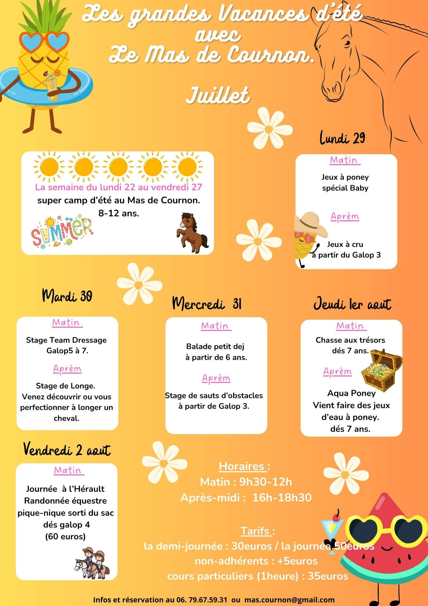
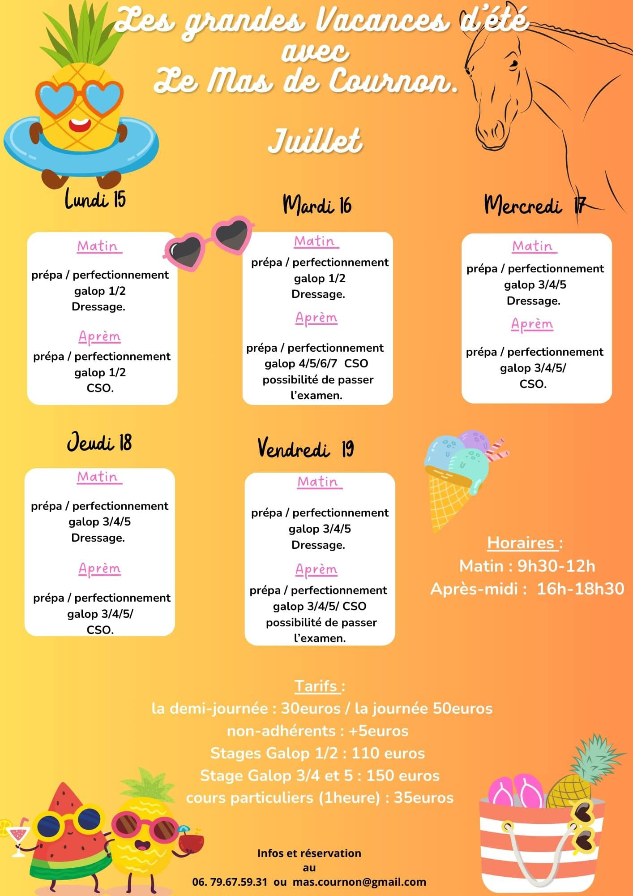
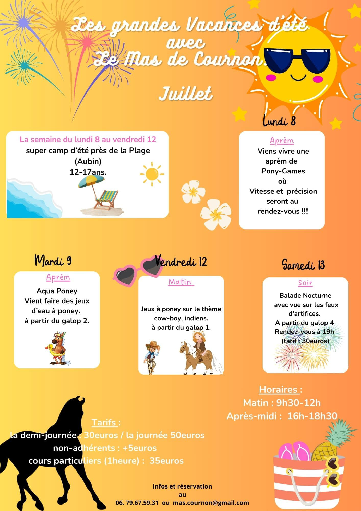
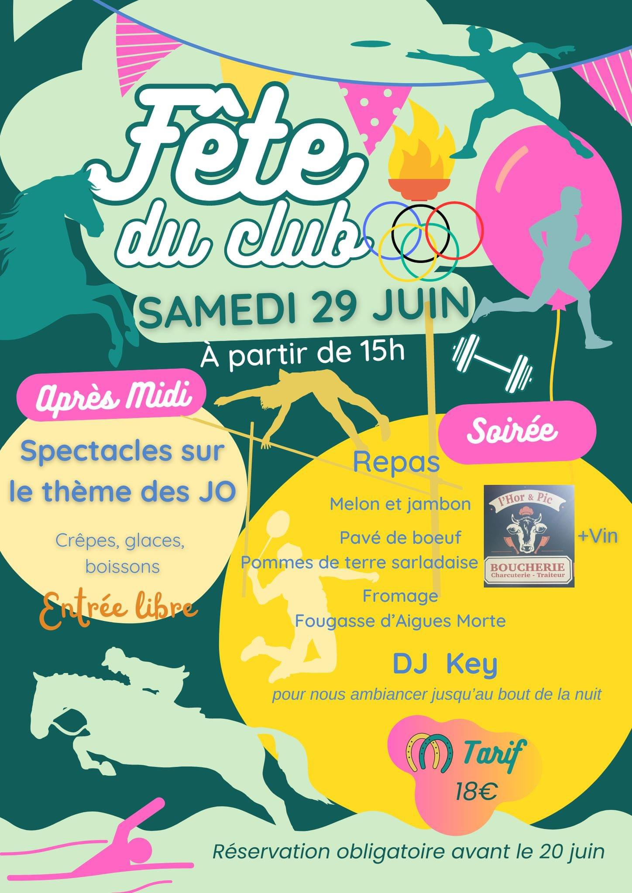
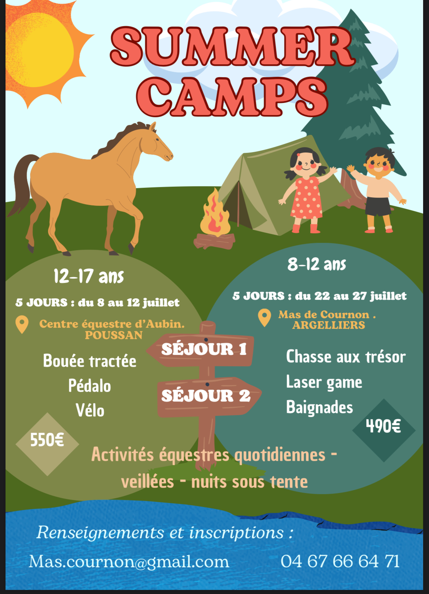
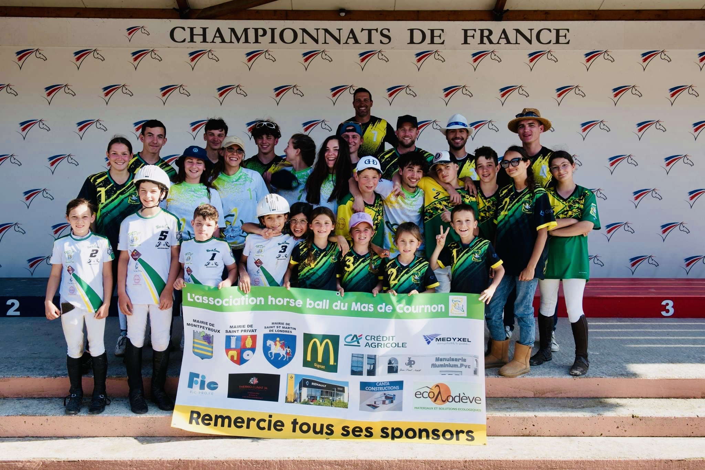
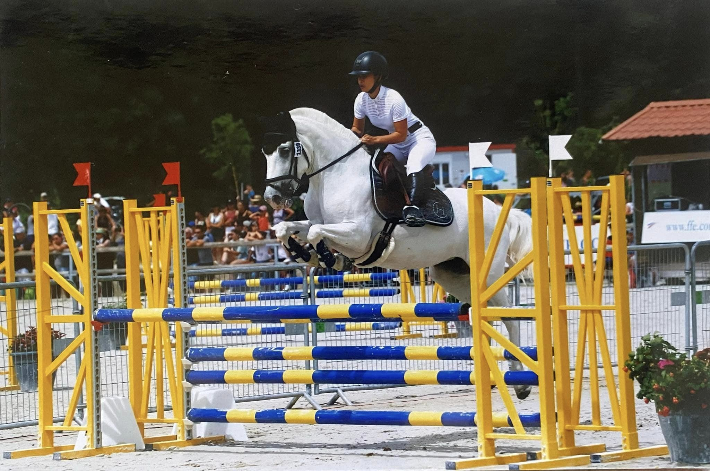
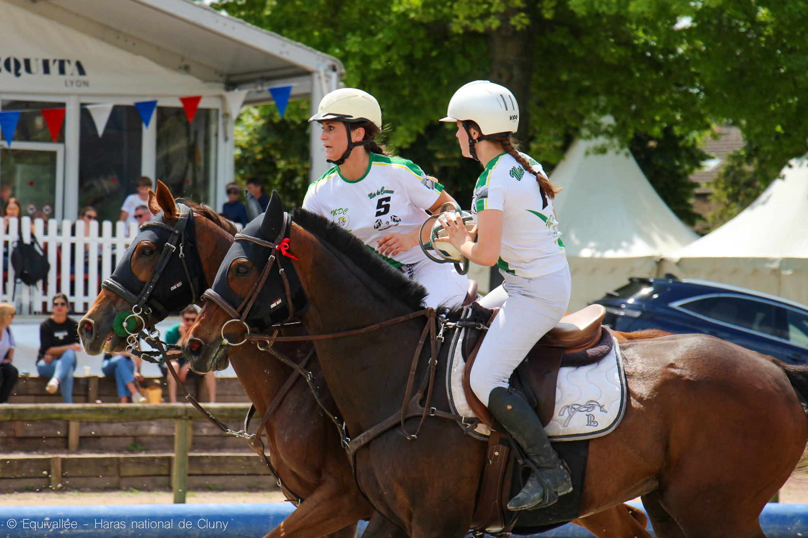
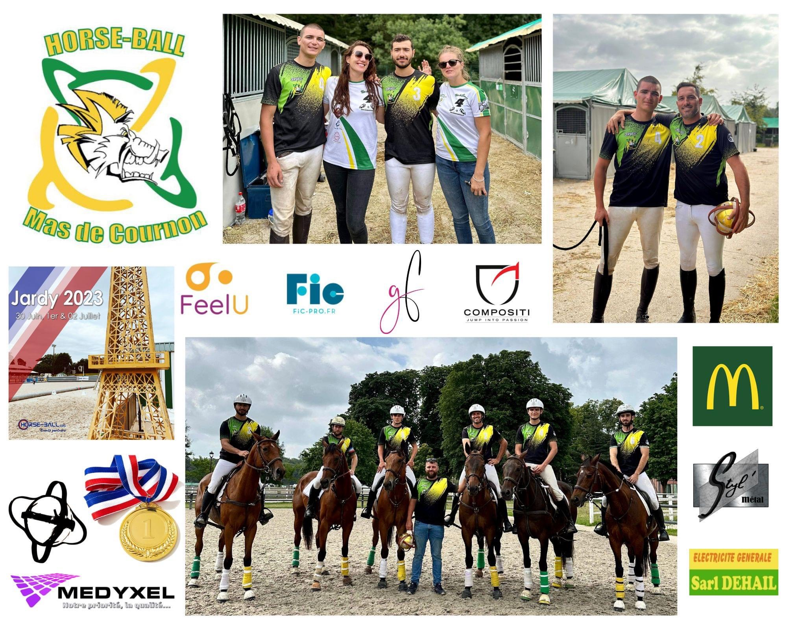

<!DOCTYPE html>
<html lang="fr" dir="ltr">
  <head>
    <meta charset="utf-8">
    <meta name="viewport" content="width=device-width,initial-scale=1" />
    <meta name="title" content="Actualités | Centre équestre du Mas de Cournon">
    <link rel = "icon" href = "../images/favicon.ico" type = "image/x-icon">
    <link rel="shortcut icon" type="image/x-icon" href="../images/favicon.ico" />
    <meta name="description" content="Retrouvez notre actualité, stages, résultats compétitifs, et évenements sur notre site ou sur notre page facebook.">
    <title>Actualités | Centre équestre du Mas de Cournon</title>
    <link rel="stylesheet" href="../css/index.css">
    <link rel="stylesheet" href="../css/actus.css">
    <link rel="canonical" href="https://www.masdecournon.fr/" />


  </head>
  <body>
      <div class="header">
        <a href="../index.html"></a>
      </div>

      <div id="navbar">
        <nav>
          <ul>
            <div class="nav">
              <li><a href="../index.html" id="Home" >Home</a></li>
              <li><a href="prestations.html" id="Prest" >Prestations</a></li>
              <li><a href="actus.html" id="Actus">Actualités</a></li>
              <li><a href="contact.html" id="Contact">Contact</a></li>
            </div>
          </ul>
        </nav>
      </div>


      <div class="body">

        <div class="content" >
            <h1>Actualités</h1>


            <div class="actualiteContent">
              <h5>Stages d'été 2024</h5>
              <div class="stageETE2024">
                
                
                
                
                
              </div>
            </div>

            <br>
            <hr>
            <br>
            <div class="actualiteContent">
              <h5>Championnats de France Club 2024</h5>
              <div class="stageETE2024">
                
              </div>
              <h6>La Team Horseball du Mas de Cournon a brillé au Championnat de France de Lamotte-Beuvron
2024 !!!</h6>
              <p>
C'est un véritable raz-de-marée qui a déferlé sur le Championnat de France de Horseball à LamotteBeuvron ! Les cavaliers du Mas de Cournon ont réalisé une performance exceptionnelle, en
remportant deux médailles d'or, une d'argent, une de bronze, une cinquième place et une sixième
place.
Les catégories Club Excellence et Minimes ont brillé de mille feux en décrochant la médaille d'or.
Les joueurs ont fait preuve d'une grande cohésion et d'une technique irréprochable, s'imposant face
à des adversaires redoutables. C'est une immense fierté de voir ces jeunes cavaliers talentueux et
leurs chevaux remporter le titre suprême.
La catégorie Benjamin a également réalisé une belle performance en décrochant la médaille
d'argent. Et la catégorie Club la médaille de bronze. Ils ont livré des matchs acharnés et ont
démontré un esprit d'équipe exemplaire.
Les cadets et les poussins, quant à eux, ont obtenu respectivement une 5ème et une 6ème place, des
résultats encourageants qui témoignent du potentiel de ces jeunes cavaliers.
L’Association Horseball Mas de Cournon tient à remercier chaleureusement ses sponsors qui ont
contribué à cette réussite. Leur soutien précieux a permis à nos jeunes sportifs de participer à cette
compétition nationale et de vivre cette expérience enrichissante.
L'aventure continue avec les championnats de France féminines qui se dérouleront à Cluny du 7 au
9 juin prochain. Nous sommes impatients de voir nos cavalières féminines briller à leur tour et
ramener une médaille au Mas de Cournon.
Félicitations à tous nos horseballeurs et horseballeuses, aux coachs et aux supporters pour ces
performances exceptionnelles !!!
Nous sommes fiers de vous !!! </p>
            </div>
            <br>
            <hr>
            <br>
            <div class="actualiteContent">
              <h5>CHAMPIONNE RÉGIONALE EN CCE C1</h5>
              <div class="stageETE2024">
                
              </div>
              <p>Un couple magnifique, Celia & Thot’aime, qui monte sur la première marche du podium et dont
nous pouvons être très fiers !!!!
Un travail régulier, juste et affiné qui fait qu’une cavalière et son cheval ne font qu’un !
Une complicité hors pair !</p>
            </div>

            <br>
            <hr>
            <br>
            <div class="actualiteContent">
              <h5>Championnats de France amateurs féminines 2024</h5>
              <div class="stageETE2024">
                
              </div>
              <p>Notre équipe Féminine Amateur est partie sur les terrains du Haras de Cluny au mois de Juin. Les
joueuses sont revenues avec une très belle 4ème place !! C’est un bel esprit d’équipe qui nous est
revenu à la maison, marquant la fin d’une première saison pour nos jeunes chevaux. Cette année les
aura perfectionné pour la prochaine saison, hâte d’y être !!!!
Encore bravo !!!!!!!!</p>
            </div>

            <br>
            <hr>
            <br>

            <div class="actualiteContent">
              <div class="stageETE">
              
              </div>
              <h5>Championnats de France Amateurs 2023</h5>
              <p>C'est après 3 journées de compétition, que les championnats de France "Jardy- Horse Ball" viennent de s'achever.<br>

🔰 Nos amateurs 4 Mas de Cournon ont remporté cette finale. 🍾🔰

🔰 Toutes nos félicitations pour cette magnifique médaille d'or🥇!!! 🔰<br>

Bravo l'équipe : Julien Bilotto Merlin Guerry Quentin Grave Corentin Ratie Mathis Allen, Raphael Le Blanc et leur super coach Robin Guyon ! <br>

🔰 Cette année 2023 aura été riche en émotion et en récompense, nous sommes fiers de nos Horse-Balleurs...🥇🥈🥉🏅🔰

💚🤍💛 Nous remercions tous nos sponsors ainsi que tous les coachs, les parents et les supporters !!! 💚🤍💛<br>

À l'année prochaine !!! 🤩💚🤍💛<br>

Medyxel - Stylmetal Sers - McDonald's Gignac - FIC - COMPOSITI - Feel U- SARL DEHAIL - Anne Sophie Maugendre - Pâtisserie Guillaume France</p>
            </div>

            <br>

            <hr>

            <br>

            <div class="actualiteContent">
              <div class="stageETE">
              
              </div>
              <h5>Stages d'été !</h5>
            </div>

            <br>

            <hr>

            <br>

            <div class="actualiteContent">
              <div class="stageETE">
              
              
              </div>
              <h5>Camps d'été !</h5>
              <p>Cette année le MDC vous propose 2 camps d'été ! <br>Un au mois de Juillet et un au mois d'août.<br>N'hésitez pas à inscrire vos enfants :D</p>
            </div>

            <br>

            <hr>

            <br>
            <div class="actualiteContent">
              <div class="FeteClub">
              
              </div>
              <h5>Fête du club 2023 !</h5>
              <p>Allez on retient cette date:      <strong>17 JUIN 2023 à partir de 14H00</strong><br>

Cette année nous fêtons cette fin d'année avec une Ruée du Mas Déguisée !!!!
Attention tous les parents doivent participer pour s'affronter en groupe sur un parcours fait d'embûches, de boue, et.... SURPRISES !!!!!!
Parcours à poneys, buvette etc....
Aperitif offert,  repas à réserver, et grosse soirée avec un DJ jusqu'au bout de la nuit !!!!!!
Venez nombreux !!!!!!!!!!!!!!
</p>
            </div>

            <br>

            <hr>

            <br>


            <div class="actualiteContent">
              <div class="lamotte2023">
              
              </div>
              <h5>Lamotte Beuvron Horse-Ball 2023</h5>
              <p>Le championnat de France de Horseball qui s’est déroulé au Parc Equestre Fédéral de
Lamotte-Beuvron (41) s'est achevé après 3 journées de compétition dans une ambiance
conviviale et détendue, les équipes participantes se sont affrontées pour défendre leurs
chances en vue d’un titre de Champion de France.
Le Centre Équestre du Mas de Cournon à Argelliers est fier de ses joueurs, coach et son
équipe de supporters.
Toutes nos félicitations aux équipes engagées.
Les minimes remportent la médaille d’or en s’imposant dignement lors d’une finale à
toute épreuve. (Romain, Eva, Mathilde, Manon, Raphaël)
Les benjamins terminent 4ème avec une équipe prometteuse qui nous réserve de belles
compétitions la saison prochaine. (Léo L, Léo F, Elise, Jeanne et Mohamed)
Les poussins remportent la médaille d’argent dans une finale à l’image de nos cavaliers,
un match de qualité riche en émotions pour nos petits vice champions de France. (Celya,
Maelya, Stella, Madyson, Alban et Tom)
La saison prochaine s’annonce encourageante, nous avons hâte de voir évoluer nos
graines de champion.</p>
            </div>

        </div>

        <div class="cRetour"></div>
      </div>

      <script src="https://ajax.googleapis.com/ajax/libs/jquery/3.1.0/jquery.min.js"></script>
      <script src="../js/index.js" charset="utf-8"></script>
      <script src="https://kit.fontawesome.com/45e38e596f.js" crossorigin="anonymous"></script>

        <footer><a id="mentionsLegales" href="mentions.html">&copy <script>document.write( new Date().getUTCFullYear() );</script>  Mas De Cournon | Mentions légales</a></footer>

  </body>
</html>
